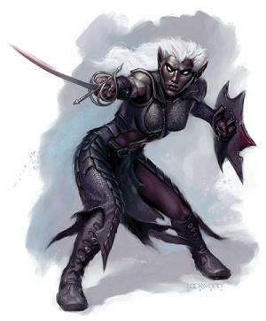
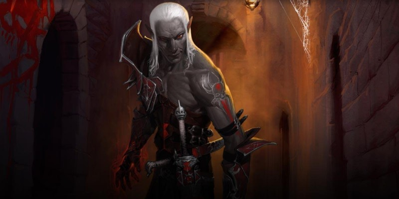

Culture drow
La plupart des races qui vivent en surface ont entendu dire que la société drow est dominée par les prêtresses de Lolth, que les mâles sont serviles, et que les esclaves et la magie y sont omniprésents. Mais qu'en est-il réellement ?
Ordre social
 La société drow (créatures également connues sous le terme d'elfes noirs) possède une structure autoritaire et une hiérarchie composée de subtiles couches de pouvoir. Mais avant d'aller plus loin, rappelons que les drows ont l'attention personnelle de leur déesse, que celle-ci favorise les femmes au détriment des hommes, et qu'il est difficile de s'opposer à la volonté de sa déesse, surtout si celle-ci s'appelle Lolth. La reine araignée est en effet la pierre angulaire de la société drow. Elle se trouve tout en haut de l'échelle et représente le plus grand pouvoir que les drows connaissent. Sous elle se trouvent ses serviteurs de la Mer Astrale, et sous ceux-ci ses représentants dans le monde des mortels, c'est-à-dire ses prêtresses.
La société drow (créatures également connues sous le terme d'elfes noirs) possède une structure autoritaire et une hiérarchie composée de subtiles couches de pouvoir. Mais avant d'aller plus loin, rappelons que les drows ont l'attention personnelle de leur déesse, que celle-ci favorise les femmes au détriment des hommes, et qu'il est difficile de s'opposer à la volonté de sa déesse, surtout si celle-ci s'appelle Lolth. La reine araignée est en effet la pierre angulaire de la société drow. Elle se trouve tout en haut de l'échelle et représente le plus grand pouvoir que les drows connaissent. Sous elle se trouvent ses serviteurs de la Mer Astrale, et sous ceux-ci ses représentants dans le monde des mortels, c'est-à-dire ses prêtresses.
La noblesse drow est divisée en « maisons » qui luttent constamment entre elles pour le pouvoir. À la tête de chaque maison se trouve une mère matrone (d'ordinaire une clerc de haut niveau). Si elle est prudente, une matrone aura des filles, prêtresses elles aussi, mais qu'elle surveillera attentivement. Car plus une maison compte de prêtresses, plus cela rend la maison forte, mais plus la sécurité de la mère matrone devient précaire. Une mère matrone avisée opposera donc ses filles les unes contre les autres le plus souvent possible. L'héritage de la fortune et de la position sociale passe par les femmes, de la plus proche et la plus âgée jusqu'à la plus jeune et la plus éloignée dans l'arbre généalogique. De fait, les prêtresses d'une maison noble sont généralement puissantes et très respectées. Notons aussi que quelques villes drows sont dirigées par un conseil composé des mères matrones les plus puissantes de la cité.
Les classes
Les drows apprécient fortement la magie et les magiciennes sont très respectées. Les magiciens sont craints, ce qui est déjà quelque chose et pousse beaucoup de mâles à emprunter cette voie. Comme ce sont eux qui produisent la magie qui protège la société drow, ils sont une clé majeure de la sécurité des drows. Les drows possèdent également des guerriers et des rôdeurs d'une efficacité effrayante. Plus longue est la vie d'un guerrier drow et plus grandes sont ses compétences, plus celui-ci obtiendra de respect vis-à-vis de ses paires. Les deux sexes sont entraînés comme guerriers, mais un homme doit démontrer plus de capacités qu'une femme pour obtenir le même respect. Les hommes sont en effet envoyés en groupe durant des semaines pour patrouiller aux alentours des villes, alors que les femmes restent généralement au sein de la cité ou à des postes de commandements. Les roublards drows sont respectés pour leurs capacités et leurs relations, les vieux l'étant plus que les jeunes toutefois, et ceci indépendamment de leur sexe. Toutefois être roublard au sein de la société drow est une activité extrêmement périlleuse. Un roublard qui se fait prendre ne pourra jamais regagner le respect de quiconque. Et un assassin est rarement pris plus d'une fois… La classe de marchand est forte mais paie hommage à Lolth plus qu'aucune autre classe. Les marchands n'hésitent pas à débourser de fortes sommes pour qu'un prêtre leur attire la faveur de Lolth.
Dans les villes drows, les riches règnent sur la classe ouvrière et, bien sûr, sur les esclaves. Car si les esclaves sont nombreux dans toute cité drow qui se respecte, ce sont les nobles, les riches et le gouvernement qui en contrôlent l'immense majorité. Les ressources nécessaires pour nourrir, loger et contrôler les esclaves ne sont en effet pas de petits sacrifices. Le prix des esclaves dépend de leur âge et de leurs capacités. Les créatures rares douées de capacités exotiques et/ou innées sont vendues aux enchères à des prix fabuleux (ou contre une faveur d'un haut prêtre de Lolth). Donc, si les grandes organisations peuvent se permettre de faire travailler les esclaves jusqu'à la mort, les petits doivent par contre se soucier de faire durer leurs esclaves. Une guilde de maître d'esclaves existe dans presque toutes les villes pour entraîner (comprendre « casser mentalement ») les esclaves pour le compte de leur propriétaire. De nombreux drows n'ont en effet pas le temps de s'atteler à cette tache de conditionnement eux-mêmes. Au passage, les maîtres d'esclaves sont connus pour faire payer moins cher les esclaves particulièrement têtus, car ils prennent plus de plaisir à travailler avec ceux-ci. Tout drow qui sait torturer peut devenir maître d’esclaves, une classe respectée au sien de la société drow, particulièrement par les marchands.
La classe ouvrière est massée dans les filets des villes. Ils produisent et vendent les articles et les services que l'aristocratie apprécie. Le changement de classe étant possible chez les drows, un ouvrier peut donc espérer un jour devenir marchand par exemple, généralement s'il parvient à surpasser ses supérieurs. Des pauvres s'engagent aussi dans l'armée pour améliorer leur situation. La maternité est vénérée à tous les niveaux de la société drow, et mêmes les femmes pauvres avec beaucoup d'enfants sont louées.
Les courtisans, des deux sexes, sont généralement vus aux côtés des drows de niveaux supérieurs. Mais ce ne sont pas des esclaves ou des prostituées. Formés à une multitude de choses (de la musique à l'histoire en passant par les poisons mortels), ils servent à divertir, à se relaxer, comme servants ou autre. Ils sont achetés, vendus et donnés comme des cadeaux. Quelquefois, les esclaves les plus rares sont formés pour devenir des courtisans. Certains êtres sont également volés encore enfants pour être élevés de cette façon. D'autres courtisans sont des drows particulièrement attrayants. Des femmes drows se retrouvent quelques fois courtisanes par punition, pour avoir perdu les faveurs de Lolth. Quoi qu'il en soit, posséder un bijou si finement aiguisé est vu comme un signe extrême de richesse et de pouvoir.
Enfance
Il est vu comme un bon signe pour un bébé qu'il se nourrisse de sa mère jusqu'à ce que le sang en coule. Les bébés qui boivent du sang mélangé avec le lait sont en effet censés être les plus prometteurs. Les enfants qui apprennent à parler et agissent les premiers auront ensuite toute l'attention de leurs parents. Car chez les drows, le père et la mère se responsabilisent autant l'un que l'autre des enfants ; ce n'est pas seulement la mère comme chez de nombreuses autres races. Les talents des femmes sont il est vrai trop précieux pour être gaspillés. Les mères drows sont par exemple connues pour terminer leurs travaux même si leurs enfants hurlent de faim à leur côté pendant ce temps. Les enfants drows ne sont donc pas dorlotés. Ils sont élevés tous ensemble et envoyés dans des écoles de très bonne tenue. On leur apprend à se faire concurrence les uns contre les autres et à ne pas montrer de pitié. Certains ne survivent d'ailleurs pas à ces jeux infantiles intenses. Les instructeurs n'accordent aucun avantage aux filles par rapport aux garçons. On leur enseigne à se battre seules face aux hommes. À l'adolescence, ce sont des femmes drows qui enseignent de manière privée aux jeunes filles à savoir contrôler les hommes. Leurs premières conquêtes font donc généralement partie de leur entrainement. Plus tard, les femmes drows « chasseront » les hommes pour le sport.
Coutumes
Les lois des drows sont non-dites mais connues. Les drows s'en imprègnent tout au long de leur enfance et de leur adolescence, lorsqu’ils grandissent, et celles-ci sont appliquées avec l'accord de l'ensemble de la communauté. Ceux qui sont pris en train d'enfreindre ces règles sont punis et/ou tués. Et les drows sont mortellement subtils dans leur manière de se traiter entre eux ou avec d'autres créatures de l'Outreterre. Les actions tape-à-l'oeil sont par exemple condamnées car de mauvais goût. Mais en réalité, les lois en elles-mêmes ne sont pas importantes, c'est plutôt le défi qui l'est. L'objectif est finalement toujours d'obtenir ce que l'on veut, mais sans se faire prendre.
Chez les drows, il y a plusieurs grands jours saints de Lolth qui doivent être observés par tous, même si la production des biens et les services ne cessent pas ces jours-là. Les cérémonies ont effet lieu après la journée de travail. Notez que les soldats chargés de protéger les villes et qui sont de garde en fin de journée en sont exempts. Les drows ne peuvent effectivement pas se permettre de rester sans défense, ne serait-ce qu'un instant.
Tabous
La plupart de races en surface croient que les drows n'ont pas de tabou, mais ce n'est pas exact. Toute société a ses tabous, quels qu’ils soient, grands ou petits. Et les drows n'y font pas d'exception. En voici quelques-uns, concernant leur comportement social :
- Amour. Alors que les autres races ont des tabous sur des choses comme le cannibalisme, les drows ont eux de forts tabous sociaux sur ce qui touche à l'amour, et sur la manière d'agir lorsque l'on est amoureux. L'acte physique oui, mais éprouver des sentiments est considéré comme un acte suicidaire.
- Égalité. Les drows sont incapables de traiter les autres races comme leurs égaux, sauf s'il s’agit d'une ruse. Un drow ne doit jamais penser que les autres races sont égales à la sienne.
- Autres dieux. Lolth est une divinité jalouse, et dans ses villes la simple mention d'autres dieux justifie une punition ou la mort. L'adoration d'autres dieux est formellement interdite.
Torture et punitions
Les drows sont infâmes en ce qui concerne leurs pratiques de la torture, quelles qu'elles soient. Parmi les elfes des premiers temps, ils furent les premiers à expérimenter la sensation de la douleur. Ils ont élevé la torture au rang de science et de traitement psychologique. Les parents drows qui punissent leurs enfants avec douleur et humiliation sont des pratiques courantes. Les étudiants sont publiquement punis devant leurs collègues et les pitres sont rares (si bien que les farces pour lesquelles personne n'a été attrapé sont racontées par les étudiants comme on raconte une légende). Tous les adultes ne sont évidemment pas des maîtres en torture, mais tous ont vu assez de douleur autour d'eux pour savoir faire souffrir les autres. Tous les drows n'utilisent toutefois pas la douleur physique comme modus-operandi. Bon nombre sont adeptes de l'humiliation et de terribles jeux d'esprit. Quelques esclaves sont tellement cassés mentalement que tout ce qu'ils sont capables de faire est de se concentrer sur leur tâche manuelle. Il existe aussi certains drows qui n'aiment pas l'effort que représente le fait de torturer quelqu'un, et préfèrent tuer une personne plutôt que de gaspiller leur énergie. Toutefois, on dit que les pires punitions sont celles qui viennent des proches de Lolth, c’est-à-dire de ses prêtresses, car celles-ci seraient divinement inspirées.
Les drows craignent instinctivement d'être transformés en driders et vendraient l'âme de leurs enfants pour que cela ne se produise pas. Cette malédiction est la pire qui puisse leur arriver. Mais la vraie terreur n'est pas tant de devenir une demi-araignée ou un demi-drow, la vraie crainte est de voir Lolth à l'instant de la malédiction, de se sentir englouti par son regard aux innombrables yeux fous, de voir toute sa folie de face. Et alors, après avoir été anéanti par son regard, l'offenseur se réveille dans le monde tel un monstre vilipendé sous la forme d'une araignée, en souvenir de Lolth. Les driders sont le plus souvent autorisés à vivre... et c'est peut être bien cela la pire punition. Car être un drider est la preuve physique et irrefutable d'une punition, et donc une marque de honte.
Esclavage
Les drows ont tendance à garder avec eux de nombreux esclaves. Ainsi, dans la plupart des villes dominées par les drows, les puissants sont entourés d’une multitude de serviteurs capturés. Ces esclaves, en général des humanoïdes, ont tendance à être plus faibles que la plupart de drows. Ceux qui possèdent des capacités spéciales sont inhibés (les lanceurs de sorts sont privés du sommeil nécessaire pour récupérer leurs sorts par exemple). Et la plupart ne connaissent pas assez l'Outreterre autour des villes pour qu'une évasion réussisse sur le long terme. De plus, on ne donne aux esclaves que ce qu'ils ont besoin pour survivre, et quelquefois même moins que cela. Si la nourriture devient un problème, un drow n'aura probablement aucun scrupule à laisser ses esclaves s'entretuer pour manger. Ceci signifie que la plupart des esclaves qui travaillent ne sont pas dans une grande condition physique. Ils sont plutôt usés et fatigués à tous bouts de champs. Aditionnellement, ils sont soumis à un régime continu de manipulation mentale. Les maîtres sont cruels et aiment jouer avec leurs esclaves en parsemant leurs jeux d'épisodes bienveillants et généreux : « on ne peut pas prendre le bonbon à l'enfant si on ne le lui donne pas auparavant ». Au bout d'un moment, la volonté de fuir s'érode et seule la volonté instinctive de vivre subsiste. Tout ceci peut être obtenu sans magie, ou au moins avec une faible intervention magique.
Les esclaves sont souvent acquis lors d'attaques dans les niveaux supérieurs de l'Outreterre ou à la surface. Les races « bonnes » sont asservies aussi souvent que possible. Les esclaves sont également pris durant toute guerre dans laquelle les drows sont impliqués, tant que l'ennemi en question n'est pas trop difficile à contrôler. Il est en effet plus facile de garder des nains des profondeurs que des beholders par exemple. Les races humanoïdes qui grandissent rapidement sont les esclaves les plus communs, car ils ont tendance à être plus faibles et leur reproduction est quelque chose que les maîtres d'esclaves maitrisent bien. Un temps de gestation faible et le fait que la maturité arrive vite permet de remplacer les morts plus rapidement. Les esclaves spéciaux sont particulièrement à plaindre, car ils sont mis à l'écart et reçoivent une attention particulière. Les elfes et les demi-elfes sont presque toujours considérés comme des esclaves spéciaux et exposés aux traitements les plus durs. Les prêtres sont également considérés comme des esclaves spéciaux à cause de leurs liens avec les dieux ennemis. Tous sont paradés et tenus en laisse, suspendus comme des décorations ou bien encore utilisés lors de rites grandioses comme offrandes à la reine araignée.
La plupart de communautés drows dépendent du travail des esclaves pour bien fonctionner (bien qu'ils le nient). Ainsi, la plupart des esclaves sont formés à exécuter certaines tâches. Beaucoup sont rassemblés pour être utilisés lors des combats comme chair à canon, censés servir de couverture aux forces d'élite, pas censés vivre. Les autres sont affectés à de grands projets comme l'entretien des sources de nourriture. Les drows gardent par exemple des troupeaux de rothes (sorte de vaches en Outreterre) et s'établissent lorsque cela est possible près d'endroits où l'on trouve des poissons. En même temps, il y a toujours des champignons ou d'autres plantes à cultiver. Ces travaux ne sont pas considérés comme sufisamment dignes pour être réalisés par un drow, mais ils doivent être faits pour que la population puisse manger. Les esclaves sont aussi utilisés dans les mines, autre activité importante pour les drows car indispensable pour forger des armes.

Traduit par blueace